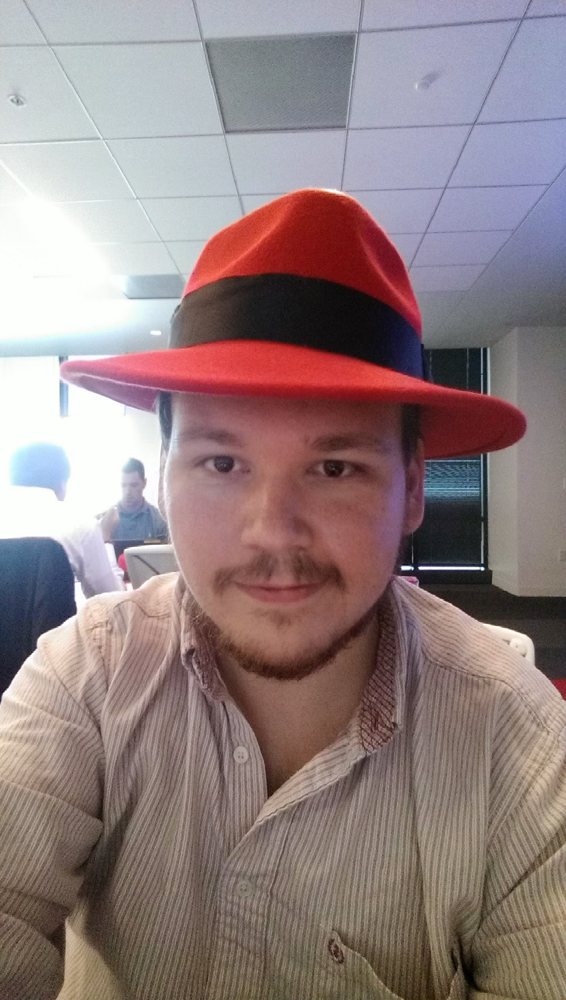

timeline
2011 : W&M '11
: CGI Federal - Fairfax, VA
2013 : CGI Federal - Durham, NC
: US Government Shutdown
: TekSystems Contract for Red Hat IT
2014 : Red Hat IT, Full-Time
2016 : Red Hat Engineering
Principal Software Engineer, Red Hat
2025-03-04
W&M CS ’11
Principal Software Engineer at Red Hat
Raleigh, NC
Note
These are my own opinions and experiences, and not those of my employer.
timeline
2011 : W&M '11
: CGI Federal - Fairfax, VA
2013 : CGI Federal - Durham, NC
: US Government Shutdown
: TekSystems Contract for Red Hat IT
2014 : Red Hat IT, Full-Time
2016 : Red Hat Engineering

Both in early 2025:
Examples:
good first issue label on GitHub projectscontributing.md